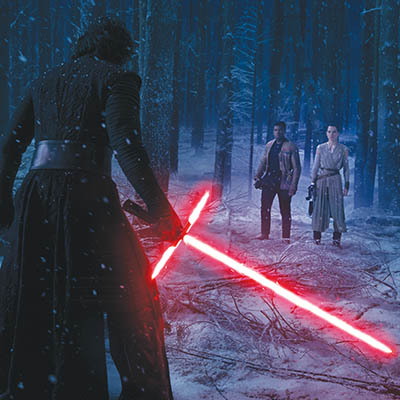
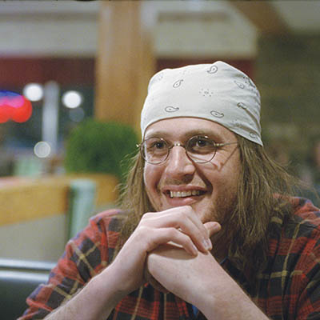

Paramount pictures
Joe's favorite films of 2015

"Beasts of No Nation"
I tend to start these lists by expressing my dread for making definitive lists. (Editor’s note: I made a silent bet with myself that Joe would open this column with a reference to hating lists. I now owe myself five bucks.) I don’t see why this year should be any different. There are always the films missed, or sometimes forgotten. Someone once told me I should journal these things more often. There’s my New Year’s resolution.
Anyway, doesn’t matter. I still saw more movies than you. Here are my favorites.
Beasts of No Nation
Writer/director Cary Fukunaga proved with 2009’s “Sin Nombre” that he was a shining talent. But it wasn’t until the cannonball first season of “True Detective” that he earned carte blanche to make this long-gestating passion project (based on the 2005 novel by Uzodinma Iweala). Equally gut-wrenching and rewarding, “Beasts” tells the story of Agu (Abraham Attah), a West African kid who becomes a child soldier under a Kony-esque rebel leader (Idris Elba) after his village is wiped out. Brutal, yet compellingly humane, Fukunaga spins uncompromising performances into a gorgeously complex emotional web.
Carol
Sophistication and spectacular performances that detail the often-discontented inner landscapes of his characters are trademarks of director Todd Haynes’ (“Far From Heaven”) quietly potent style. His eye for perfectly composed shots and textured scenes create a layered, frame-worthy cinematic portraiture. Cate Blanchett plays Carol, a divorcee fighting for custody of her daughter while living closeted in 1950’s New York. When she meets Therese (Rooney Mara), a photographer who works at a department store, their magnetic attraction threatens to upend both their lives. Oscar-worthy performances abound in this gracefully constructed, unforgettably staged work of art.
Mad Max: Fury Road
Action movies don’t usually make these lists, much less the fourth film in a 36 year-old franchise from a director who could have started collecting Social Security a decade ago. But this was a good year for that kind of thing. “Mad Max: Fury Road” not only lived up to the promise of its magnificent trailers, it also ranks as the best in the series. Director George Miller serves up a fat-free action-gasm that delivers the essence of his demented style within an insanely detailed world, while giving us the most iconic female action hero—Imperator Furiosa (Charlize Theron)—since Sigourney Weaver’s Ripley.
Inside Out
Riley is a pre-teen girl forced to move with her parents to San Francisco when her father gets a new job. Her emotions are conflicted, quite literally. Turns out Fear, Sadness, Joy, Disgust, and Anger are little people who run a control room in her head, working mostly in harmony to balance her emotional state—until Joy and Sadness are sucked out into the wilderness of Riley’s memories. The sheer imagination on display is awe-inspiring, bolstered by Pixar’s typically great and emotional storytelling. You will cry. Bing Bong got me.

Star Wars: The Force Awakens
Some of you might groan at this one, and I’m a little conflicted myself, but here’s the thing: despite the problems with the script, and that it’s a quasi-remake, “The Force Awakens” is still a ton of fun. The fact is, I’ll wind up seeing this movie more times than all the other films on this list combined. Years ago I put JJ Abram’s “Star Trek” in my Top 10 for similar reasons. It was simply that entertaining, that fun, and I have, in fact, seen it at least 15 times now. Whatever its shortcomings, “The Force Awakens” taps into the excitement and nostalgia of the original trilogy that for some of us is ingrained on a near-genetic level. Abrams has achieved something that seemed almost impossible after the prequels: he got us excited about “Star Wars” again.
Tangerine
If you need proof that vital, micro-budget cinema is alive and well, look no further than writer/director Sean Baker’s brilliantly transgressive quasi-New Wave comedy, "Tangerine." It’s not only gorgeous (for being shot on iPhones), it’s also a vital kick in the ribs for mainstream filmmaking. The story of two trans sex workers with a vendetta against their mutual pimp is oddly accessible for those of us who aren’t in that game—rendered like a waking dream by the hyper-real cinematography and the utterly genuine performances of its lead actresses, Kitana Kiki Rodriguez and Mya Taylor. No other American film this year was as revelatory.

The End of the Tour
Jesse Eisenberg portrays David Lipsky, the Rolling Stone writer who interviewed literary wunderkind David Foster Wallace (Jason Segel) during the book tour for his 1996 masterwork, Infinite Jest. Told as a flashback after learning of Wallace’s suicide in 2008, the film (based on Lipsky’s book) acts as something of a biopic for the legendary writer, revealing his genius through crackling conversations between he and Lipsky, as they discuss an array of subjects; from pop culture to artistic integrity to the nature of television addiction (he doesn’t own one), while dancing around the subject of Wallace’s chronic depression and addictive personality. Director James Ponsoldt’s film is funny, thoughtful, and rapturously entertaining, while the finely calibrated performances from Eisenberg and Segel capture their warm frenemy bond, giving us a deeply satisfying look into the soul of an artist.
The Hateful Eight
Director Quentin Tarantino’s eighth film is a return to form for the illustrious and controversial auteur. Leaving behind his historical revenge fantasies for something far less fanciful, "The Hateful Eight" gathers seven unrepentant S.O.B.s and one wicked woman in a mountaintop cabin during a blizzard. The characters are all uniquely drawn and beautifully realized (not a shock) but the film is anchored by Sam Jackson’s typical charisma and his perfect delivery of QT’s trademark dialogue. Violent, suspenseful, likely offensive, and weirdly funny, it lives up to its title, and is Tarantino’s most accomplished film since “Jackie Brown.”
The Martian
“I’m going to have to science the shit out of this,” says Matt Damon’s Mark Watney just after he’s marooned on Mars, realizing that science is all that can save him. You almost feel your heart jump for joy. Damon plays a botanist left for dead after a violent storm forces the rest of his scientific team to escape from the Red Planet. He must not only find a way to contact Earth, but also survive in a lifeless world, for years. Exciting, beautifully shot and directed, and carried by Damon’s warm and funny charm, director Ridley Scott, whose “Alien” and “Blade Runner” are amongst my favorite films of all time, has made what might be my third favorite film of his entire career.
White God
This heart-rending Hungarian film is like an odd remake of the 1989 satire “Baxter” if it were directed by James Cameron. Lili is forced to give up her dog, Hagen, when her father won’t pay the tax for owning a mongrel. Pursued by militant dog catchers who go after him like he robbed a bank, Hagen falls into the clutches of a dog fighter who radicalizes him to revolt against his former masters. The subtext of racial discrimination isn’t subtle, but writer/director Kornél Mundruczó’s story is an emotionally wrenching adventure. A really mean-spirited Disney film, with a sublimely satisfying payoff. Someone should nominate that dog for something.
Rachel McAdams, Michael Keaton and Mark Ruffalo in “Spotlight”
CRITICS CHOICE
Oklahoma Film Critics Circle names "Spotlight" top film
The Oklahoma Film Critics Circle, a statewide group of film critics (including TTV’s Joe O’Shansky and Joshua Kline), announced its tenth annual list of awards for achievement in cinema, naming “Spotlight” the Best Film of 2015 and awarding Best Director to George Miller for his blockbuster hit “Mad Max: Fury Road.”
By the widest margin of victory in any category, Best Original Screenplay honors also went to “Spotlight,” a riveting movie about the Boston Globe’s investigation into the massive, decades-long cover-up of child molestation in the Catholic Church.
“Spotlight’s” Michael Keaton won Best Supporting Actor in a tie with Sylvester Stallone for his return as Rocky Balboa in “Creed.”
“‘Spotlight’ is an exceptional film in a year full of great movies,” said OFCC President James Cooper in a press release.
“We have strong actors at their best in ‘Spotlight’—Keaton, Rachel McAdams, Mark Ruffalo, and Liev Schreiber—and, what makes their performances so effective is their ability to come across as ordinary journalists doing actual investigative journalism. It’s a rare film to get so much right about how a real newsroom works.
“With confidence in mass news media at historic lows, particularly among young adults 18-49, ‘Spotlight’ reminds us what good journalism and smart filmmaking look like. The film is this decade’s ‘All the Presidents Men.’”
Joining “Spotlight” on OFCC’s list of 2015’s Top 10 Films are Miller’s “Mad Max: Fury Road,” “Brooklyn,” “Ex Machina,” “The Big Short,” “Carol,” “The Revenant,” “Inside Out,” “Sicario” and “The Hateful Eight.”
Best Body of Work went to Alicia Vikander, who appeared in “The Danish Girl,” “Testament of Youth,” “Burnt” and “Ex Machina.”
For her role as a beautiful artificial intelligence robot in the sci-fi thriller “Ex Machina,” Vikander also won Best Supporting Actress.
Brie Larson won Best Actress for her performance in “Room” as a kidnapped woman who convinces her son the small shed where they’ve been captive for five years is all that exists.
Leonardo DiCaprio won Best Actor for his work in director Alejandro González Iñárritu’s brutal epic revenge thriller, “The Revenant.”
Pixar's “Inside Out” won Best Animated Feature.
For his directorial debut “Ex Machina,” Alex Garland won Best First Feature.
Additional award winners include “Son of Saul” for Best Foreign Language Film, “The Big Short” for Best Adapted Screenplay, and “Amy”—about late singer Amy Winehouse—for Best Documentary.
Not every award honored quality work.
Futuristic spectacle “Tomorrowland” won 2015’s Most Disappointing Film.
“Tomorrowland should work,” said Cooper. “But, not even Key from the hilarious ‘Key and Peele,’ George Clooney, or director Brad Bird (‘Ratatouille’) could save this movie from being anything more than a dud.”
OFCC members are Oklahoma-based movie critics writing for print, broadcast, and online outlets that publish or post reviews of current film releases.
OFCC 2015 Winners
Best Picture
“Spotlight”
“Mad Max: Fury Road”
“Brooklyn”
“Ex-Machina”
“The Big Short”
“Carol”
“The Revenant”
“Inside Out”
“Sicario”
“The Hateful Eight”
Best Actor
Leonardo DiCaprio, “The Revenant”
Best Actress
Brie Larson, “Room”
Best Animated Film
“Inside Out”
Best Body of Work
Alicia Vikander, “Ex Machina,” “The Danish Girl,” “Testament of Youth,” “Burnt”
Best Director
George Miller, “Mad Max: Fury Road”
Best Documentary
“Amy”
Best First Feature
Alex Garland, “Ex Machina”
Best Foreign Language Film
“Son of Saul”
Best Original Screenplay
“Spotlight”
Best Adapted Screenplay
Charles Randolph and Adam McKay, “The Big Short”
Best Supporting Actor
Michael Keaton “Spotlight” and Sylvester Stallone “Creed”
Best Supporting Actress
Alicia Vikander, “Ex Machina”
For more on 2015's best films, listen to the latest episode of the local podcast Videodrone, in which Joe and Joshua Kline join host Charles Elmore to discuss the year in film and OFCC's top picks.
For more from Joe, read his article on Christmas movies.
.jpg)
.jpg)